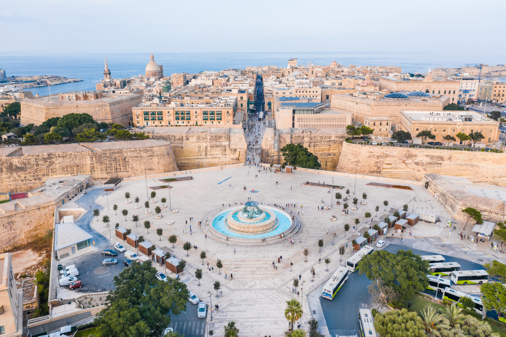
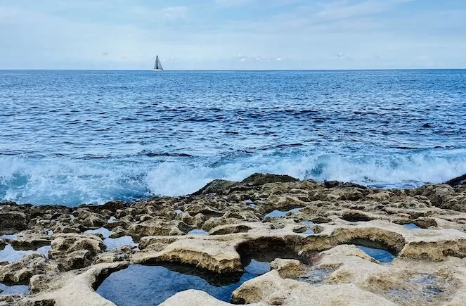
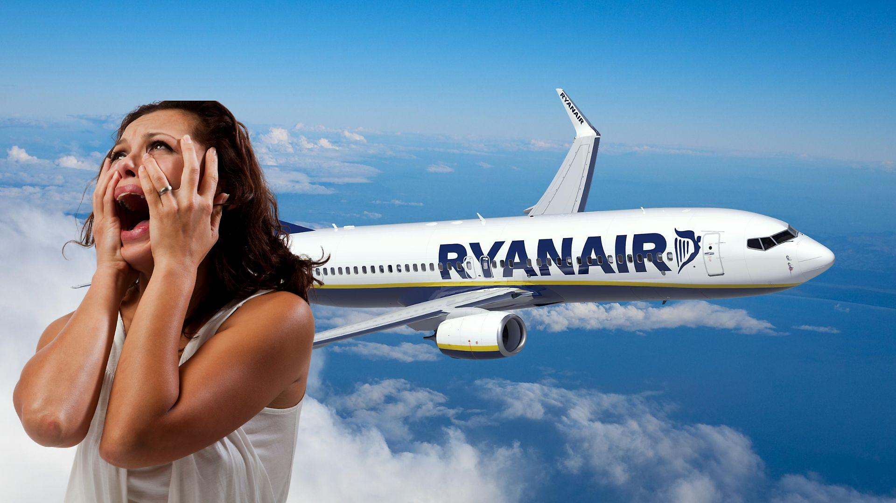

Itinerario 3 - Esplora le Meraviglie Nascoste
Il più esplorativo dei tre: spiagge nascoste, percorsi poco battuti e tanta natura. C'è meno città e più avventura, con un tocco finale romantico e fotografico (Mdina, Qarraba, Popeye Village). Ogni giorno è una scoperta.
Idele per: chi ama esplorare luoghi fuori rotta e scoprire calette uniche e scorci panoramici lontani dal turismo di massa.

Giorno 1: Lunedì 8 Settembre - Welcome to Malta
- Sera: Arrivo all'aeroporto di Malta alle 19:45. Dopo il trasferimento e il check-in in appartamento a Sliema (prevedendo di arrivare intorno alle 22:00/23:00), dedica la serata a rilassarti e a familiarizzare con la zona. Puoi fare una breve passeggiata lungo la Promenade di Sliema per goderti l'atmosfera serale e ammirare le luci sulla baia. Cena in uno dei ristoranti con vista mare o in un locale caratteristico nelle vie interne.
Giorno 2: Martedì 9 Settembre - Sliema chill
- Mattina: Colazione in tranquillità, spesa e poi pranzo.
- Pomeriggio: Bagno nella spiagge di Sliema.
- Sera: Rientro in appartamento e cena.


Giorno 3: Mercoledì 10 Settembre - Imġiebaħ Bay
- Mattina: Escursione a Imġiebaħ Bay e bagno.
- Pomeriggio: Pranzo al sacco e, se possibile, trasferimento a Mellieha per l'aperitivo. Altrimenti ritorno a Sliema.
- Sera: Cena e uscita.
Giorno 4: Giovedì 11 Settembre - Gnejna + Qarraba
- Mattina: Partenza per Gnejna Bay
- Pomeriggio: Pranzo e breve trekking verso Qarraba Bay.
- Sera: Rientro a Sliema, cena e uscita.


Giorno 5: Venerdì 12 Settembre - Blue Lagoon
- Mattina: Tour in barca verso Gozo e visita della cittadina di La Victoria.
- Pomeriggio: Pranzo e trasferimento alla Blue Lagoon e bagno.
- Sera: Rientro, cena e uscita.
Giorno 6: Sabato 13 Settembre - St. Peter's Pool + Il-Kalanka
- Mattina: Trasferimento a St. Peter's Pool e bagno + tuffi.
- Pomeriggio: Pranzo e trekking verso Il Il-Kalanka>
- Sera: Ultima cena speciale. Puoi optare per un ristorante di pesce a Spinola Bay a St. Julian's o scegliere uno dei ristoranti a Sliema.


Giorno 7: Domenica 14 Settembre - Mattinata Libera e Partenza
- Mattina: Tempo libero per gli ultimi acquisti di souvenir a Sliema, una passeggiata rilassante sul lungomare, o un caffè finale in uno dei tanti locali con vista mare. Goditi un'ultima colazione maltese.
- Pomeriggio: Trasferimento all'aeroporto per il volo di rientro previsto per le 19:50. Considera di partire dall'alloggio almeno 3 ore prima del volo per avere tempo sufficiente per il check-in e i controlli di sicurezza.